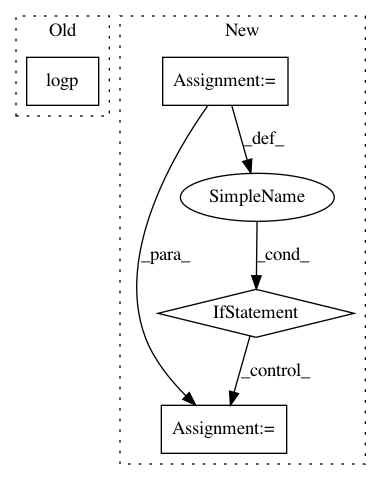

6f0013f18e9ddeba5c2d5d40101d693d02f6c0e7,pymc3/step_methods/metropolis.py,BinaryGibbsMetropolis,astep,#BinaryGibbsMetropolis#Any#Any#,257
Before Change
for idx in order:
q_prop[idx] = True - q_prop[idx]
q_cur = metrop_select(logp(q_prop) - logp(q_cur), q_prop, q_cur)
q_prop = np.copy(q_cur)
return q_cur
After Change
for idx in order:
curr_val, q[idx] = q[idx], True - q[idx]
logp_prop = logp(q)
q[idx] = metrop_select(logp_prop - logp_curr, q[idx], curr_val)
if q[idx] != curr_val:
logp_curr = logp_prop
return q
@staticmethod
def competence(var):
In pattern: SUPERPATTERN
Frequency: 3
Non-data size: 4
Instances
Project Name: pymc-devs/pymc3
Commit Name: 6f0013f18e9ddeba5c2d5d40101d693d02f6c0e7
Time: 2016-10-13
Author: wanderer2@gmail.com
File Name: pymc3/step_methods/metropolis.py
Class Name: BinaryGibbsMetropolis
Method Name: astep
Project Name: pymc-devs/pymc3
Commit Name: 87702590ad6d18db13eafbafc1bb96eb8e31e520
Time: 2020-07-04
Author: brandonwillard@users.noreply.github.com
File Name: pymc3/distributions/mixture.py
Class Name: Mixture
Method Name: __init__
Project Name: pymc-devs/pymc3
Commit Name: a021f7fa64d6af259d28a895615ea398a8c83d4d
Time: 2018-05-05
Author: bwengals@users.noreply.github.com
File Name: pymc3/distributions/transforms.py
Class Name: TransformedDistribution
Method Name: logp